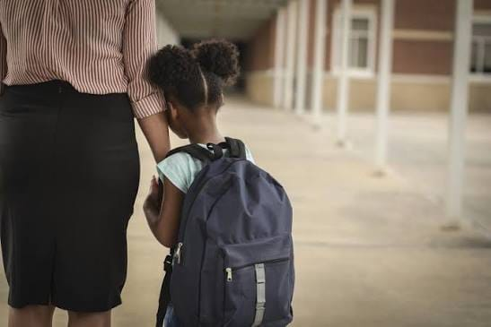

Racismo nas escolas: um problema que precisa ser enfrentado

Racismo nas escolas: um problema que precisa ser enfrentado
O racismo ainda está presente no ambiente escolar e pode aparecer de diferentes formas, como em apelidos ofensivos, comentários preconceituosos, exclusão de estudantes e discriminação por causa da cor da pele, do cabelo ou de características culturais.
Além de causar sofrimento, essas atitudes podem afetar a autoestima, a convivência e o desempenho escolar dos estudantes. Muitas vezes, situações racistas são tratadas como “brincadeira”, mas uma ofensa não deixa de ser preconceituosa por ter sido feita em tom de humor.
A escola possui um papel importante no combate ao racismo.
Professores, funcionários, estudantes e famílias podem contribuir para construir um ambiente mais respeitoso, no qual as diferenças sejam valorizadas. Trabalhar a história e a cultura afro-brasileira e africana também ajuda a combater estereótipos e ampliar o conhecimento dos alunos.
Combater o racismo não significa apenas agir quando uma situação acontece, mas também prevenir o preconceito por meio da educação e do diálogo. Denunciar casos de discriminação e oferecer apoio às vítimas de racismo são atitudes importantes para tornar a escola um espaço mais seguro e inclusivo.
O respeito deve fazer parte da rotina escolar. Afinal, aprender também significa conviver com as diferenças e entender que ninguém deve ser tratado de forma inferior por causa de sua origem ou aparência.
@v9xgury